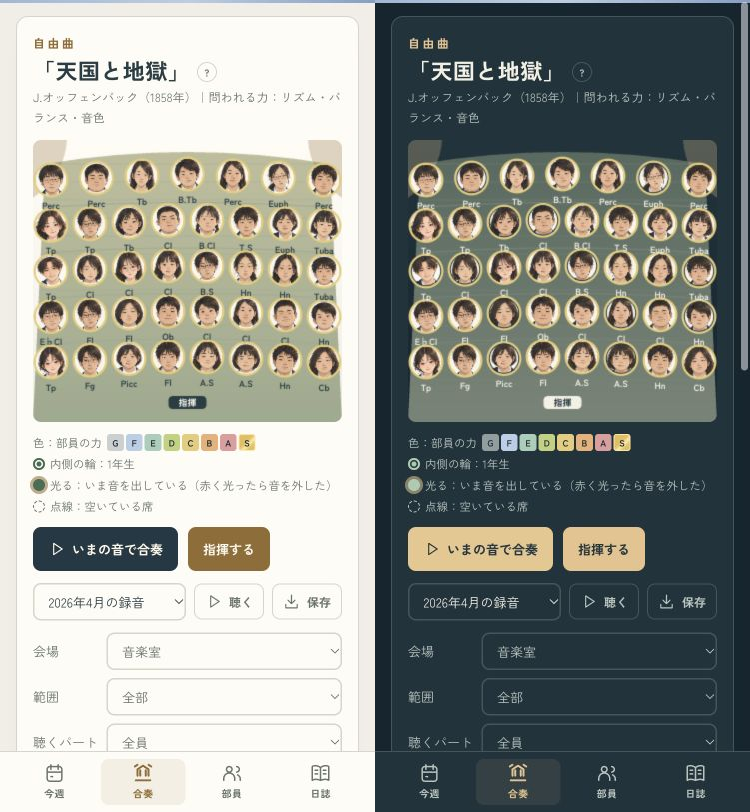
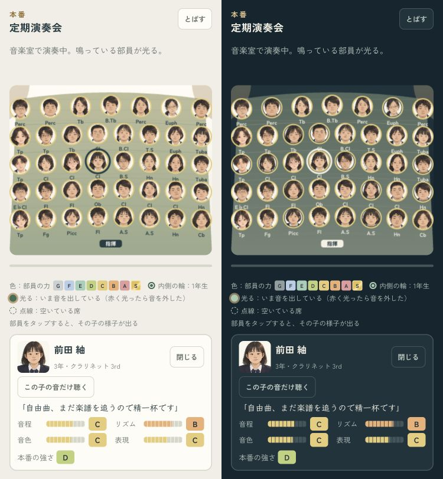
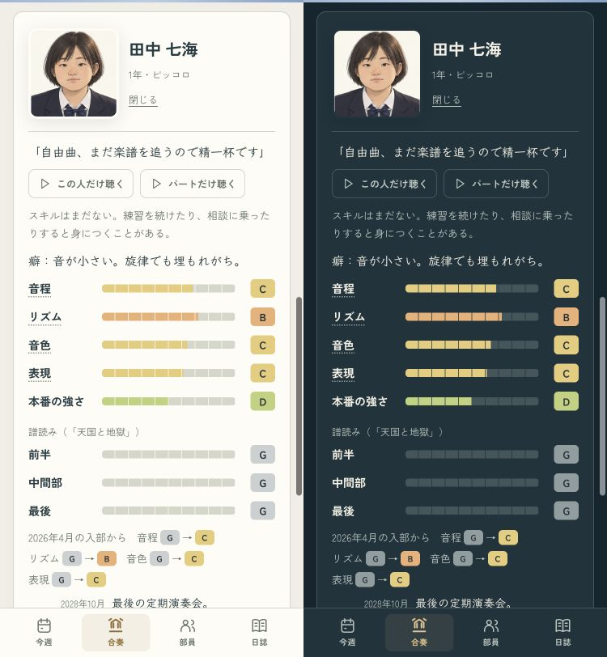
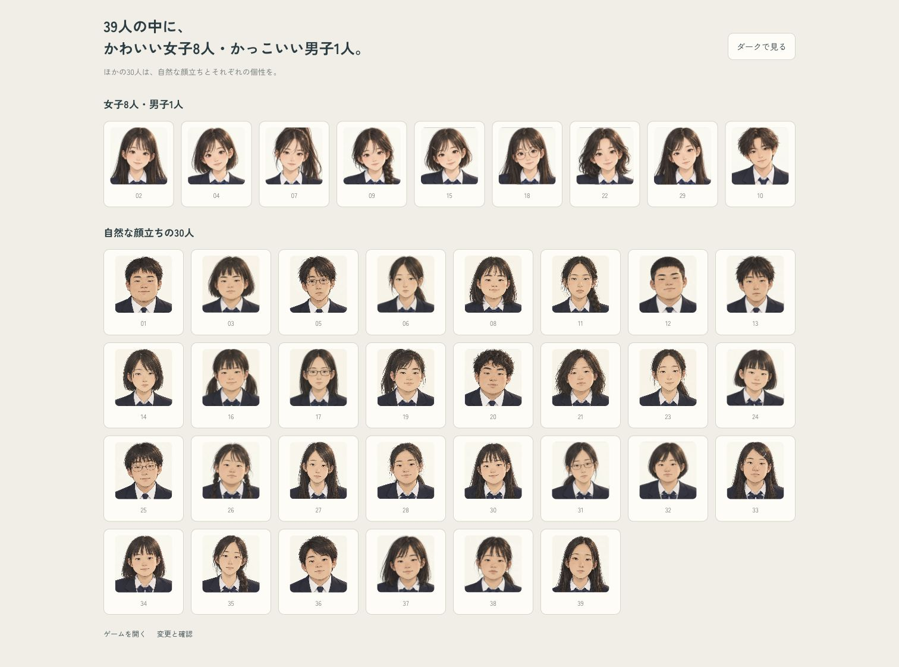

演奏にも、いつもの顔を。
女子8人・男子1人の原画はそのまま。ほかの30人を、もっと素朴な顔立ちへ描き直しました。
ゲーム画面は375px。左がライト、右がダークです。
本番の舞台

合奏

顔を押して、部員の音を聴く

部員カード

整った9人と、素朴な30人

女子8人・男子1人の原画はそのまま。ほかの30人を、もっと素朴な顔立ちへ描き直しました。
ゲーム画面は375px。左がライト、右がダークです。



